1
Pick a line.
The board rolls automatically. Swipe or use the left/right buttons to change lanes. Tokens make the path readable.
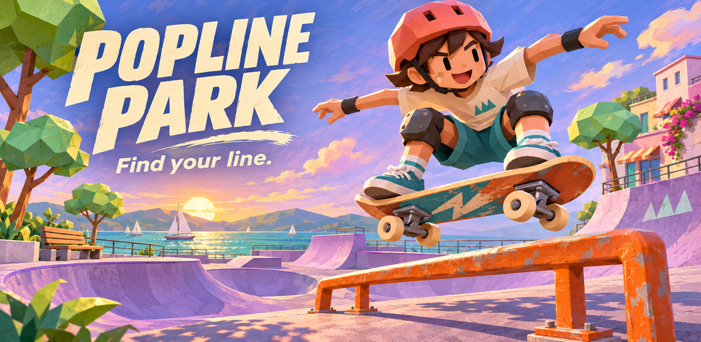
Popline Park
A compact 3D skate arcade game. One clear action loop, generous touch controls and a colorful Kenney waterfront park.
The image above is generated marketing illustration. The gameplay captures below show the implemented game.
The idea
The board rolls automatically. Swipe or use the left/right buttons to change lanes. Tokens make the path readable.
Tap OLLIE to clear a low block or land a boardslide on a rail. Chain tricks for a better multiplier; bumps cost hearts and break the combo.
Finish for coins, XP and up to three stars. Improve airtime, steering or token earnings. Try Endless Ride or return for daily goals.
Actual implemented views
Fresh-profile automated desktop runtime captures at a 1080 × 1920 phone profile. The driver uses genuine game actions and completes a real ride; scores, rewards and result screens are not composited or fabricated. These are not physical-phone screenshots.
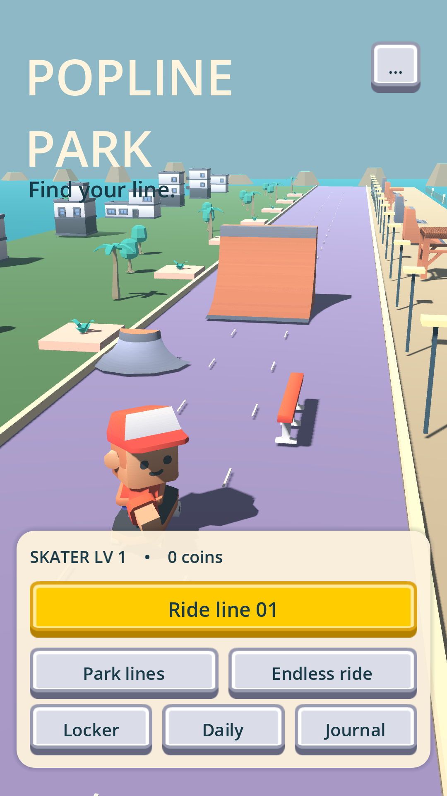
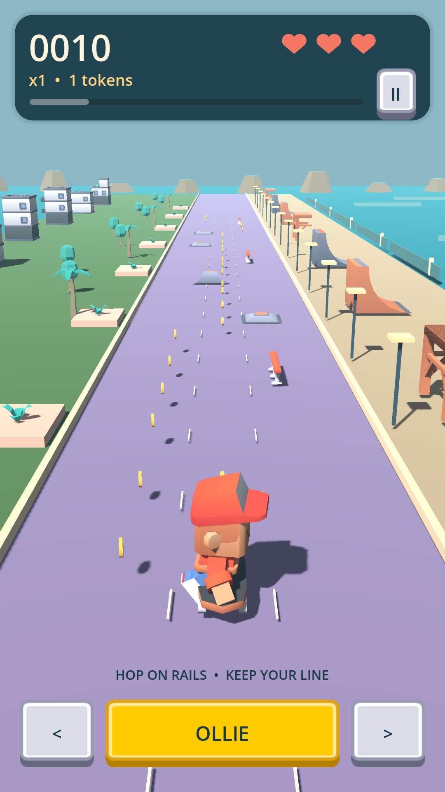
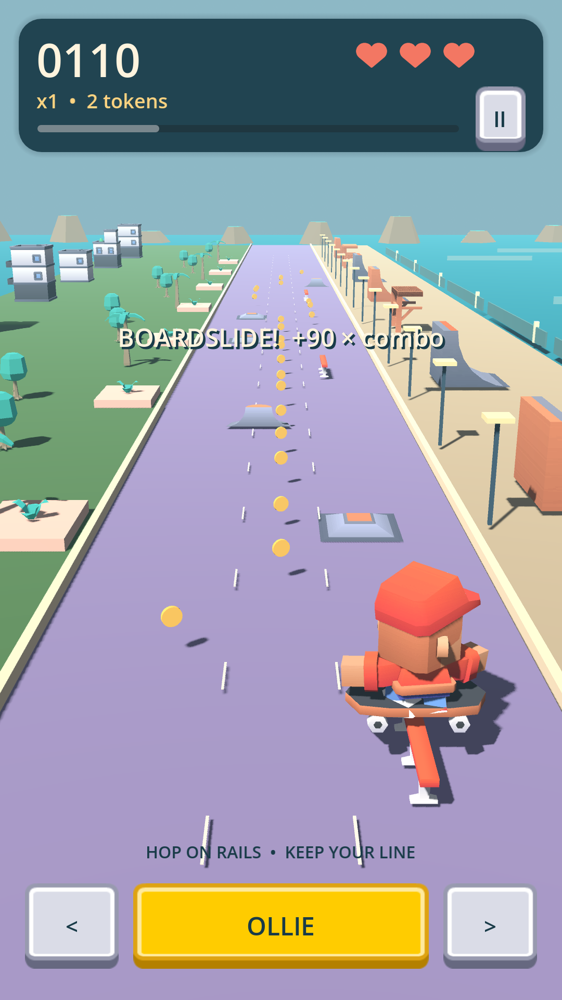
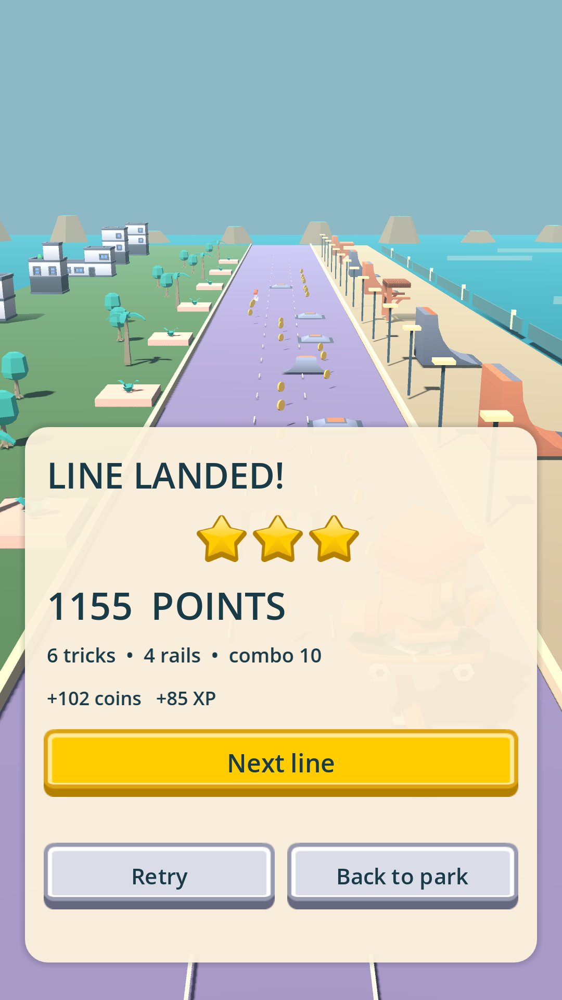
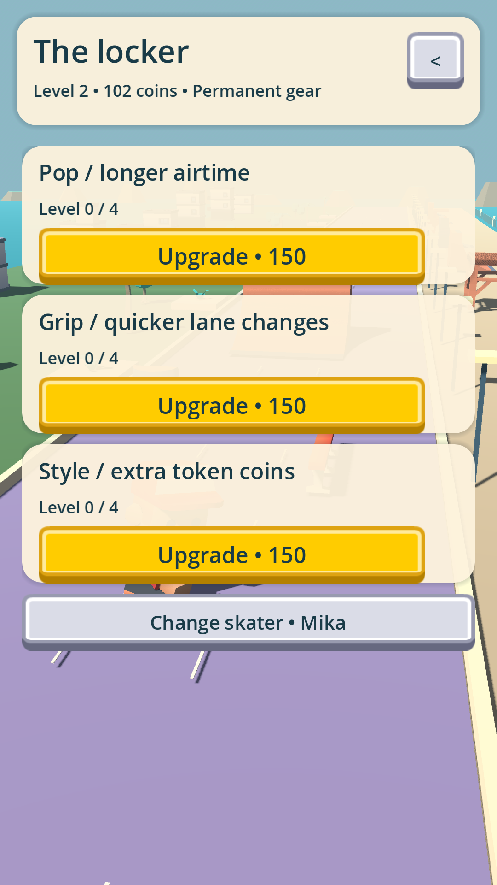
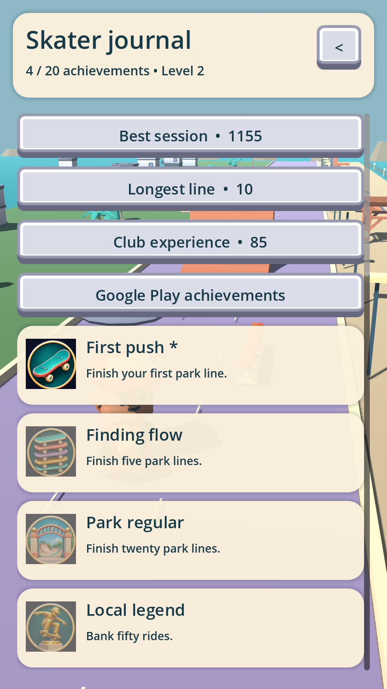
The matching 7-inch profile is 800 × 1280; the 10-inch profile is 1200 × 1920. Each has these six views plus two district previews. Capture provenance and file index.
Monetization
Home and results screens reserve a bottom strip including native banner height and navigation insets. The banner hides while skating.
Every third banked ride, at a stopped transition. There is no gameplay timer surprise and no extra fixed-time cap.
After failure: opt into an available ad for two hearts and brief protection, once per ride. Only an earned callback grants it. Free retry is always available.
This build uses Google sample ad IDs. Gameplay freezes through full-screen ad and consent UI, with explicit resume afterward. Web and unavailable services never invent a reward. Production account mappings, privacy policy and publisher consent configuration are still required.
Progress and return visits
Skater XP, permanent pop/grip/style upgrades, campaign mastery stars, daily action goals, a seeded daily ride and a seven-day gift streak are stored locally. Twenty achievements cover meaningful milestones in rails, tricks, combos, clean rides and progression. Score, combo and XP have separate local record boards and blank Play Games mappings.
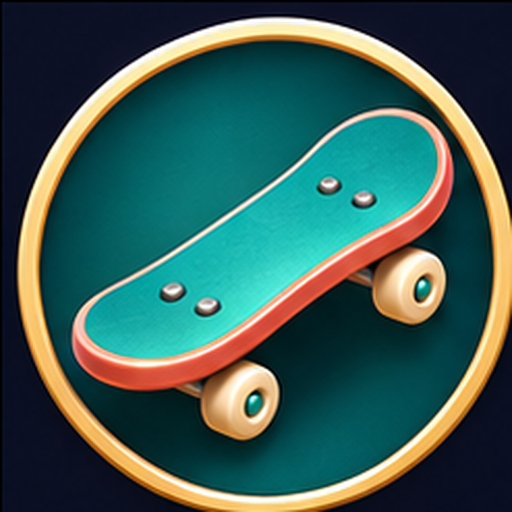
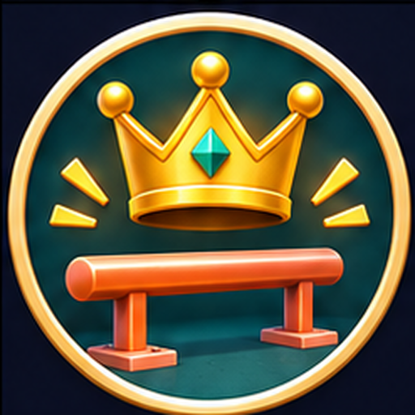
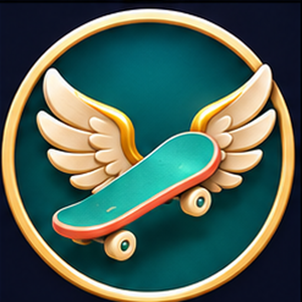
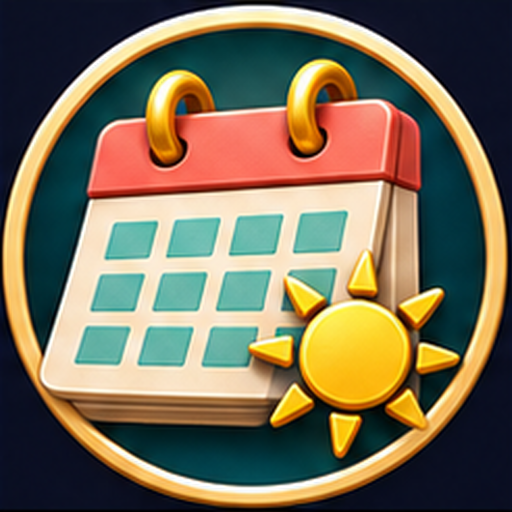
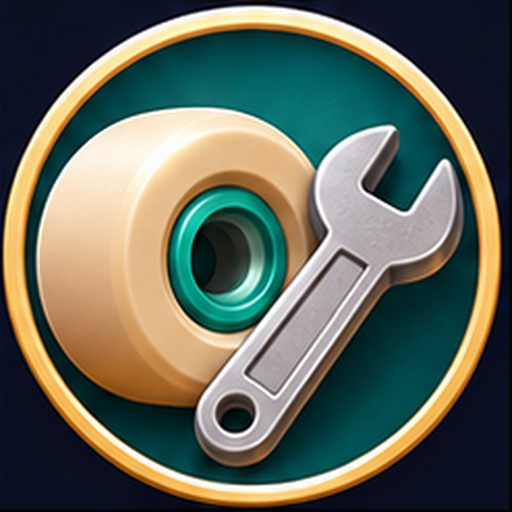
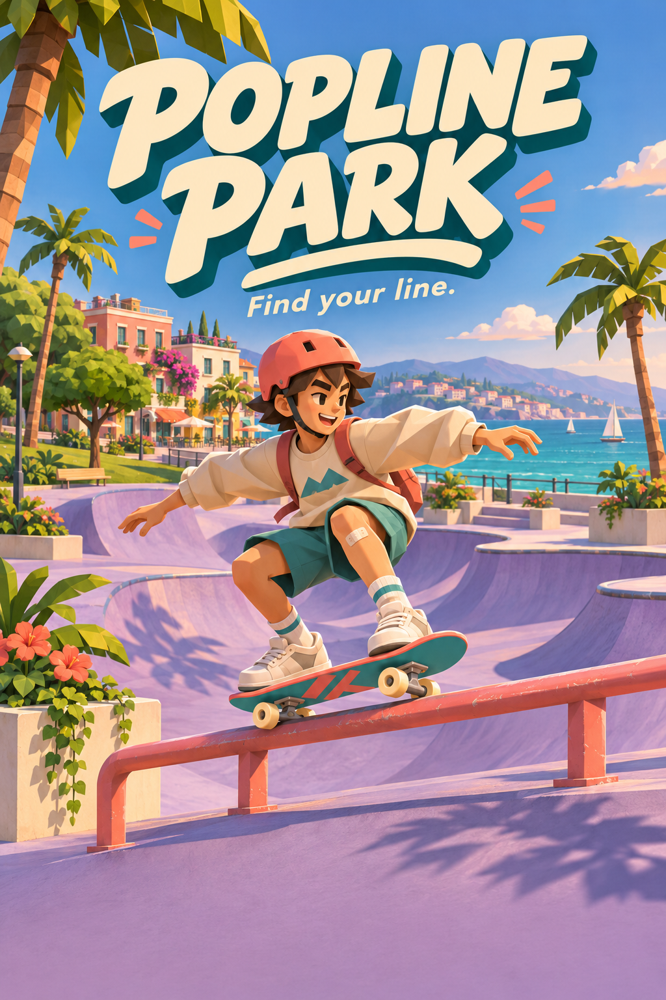
Full publishing package
App icon, feature graphic, portrait splash, 20 achievement icons, three board icons, short/long descriptions, categories/tags and website copy are included. Runtime scenery and rating stars use the supplied Kenney assets.
The illustration is aspirational branding; the actual low-poly game is shown separately above. The store listing currently states the test-service limitations instead of promising configured remote features.
Acceptance evidence
| Area | Evidence / limit |
|---|---|
| Rules and persistence | 152 source assertions pass: routes, daily claims, corruption recovery, payouts, upgrades and callback idempotency. |
| Lifecycle and UI | 26 source assertions pass: pause controls, background/Back, saved districts, mode switching and earned-continue storage failure. These are fixtures, not native ad proof. |
| Android | Native install/launch, manifest, plugin and ABI checks are recorded against artifact hashes in the acceptance document. Emulator evidence is distinct from physical-device testing. |
| Web | Browser steering/ollie/pause and cold save recovery were exercised. Final export and deployment identity are recorded below. |
| Owner follow-up | Production IDs/signing/backend, final consent and store questionnaires, physical-device input/performance/audio and human difficulty review. |
Exact tested artifacts and outstanding checks →
No Google Play publication or production-service acceptance is claimed. See the acceptance document for remaining tool limits.